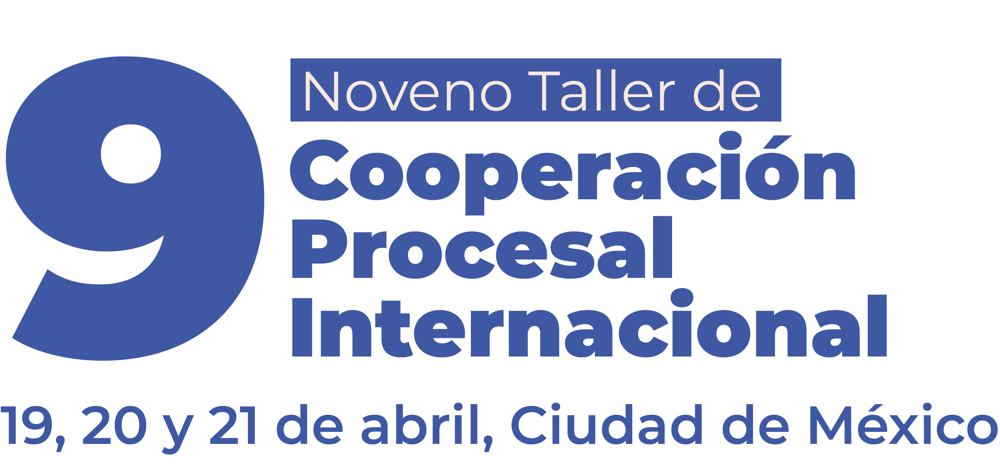

Con la impartición de este 8° Taller se continúa persiguiendo y facilitando el intercambio de conocimientos y experiencias entre los operadores judiciales, académicos, legisladores y ciudadanía sobre normas y estándares existentes en el campo y sus implicaciones, así como poder generar cambios en nuestro sistema y legislación que nos permita ir acorde con los avances mundiales en la materia.